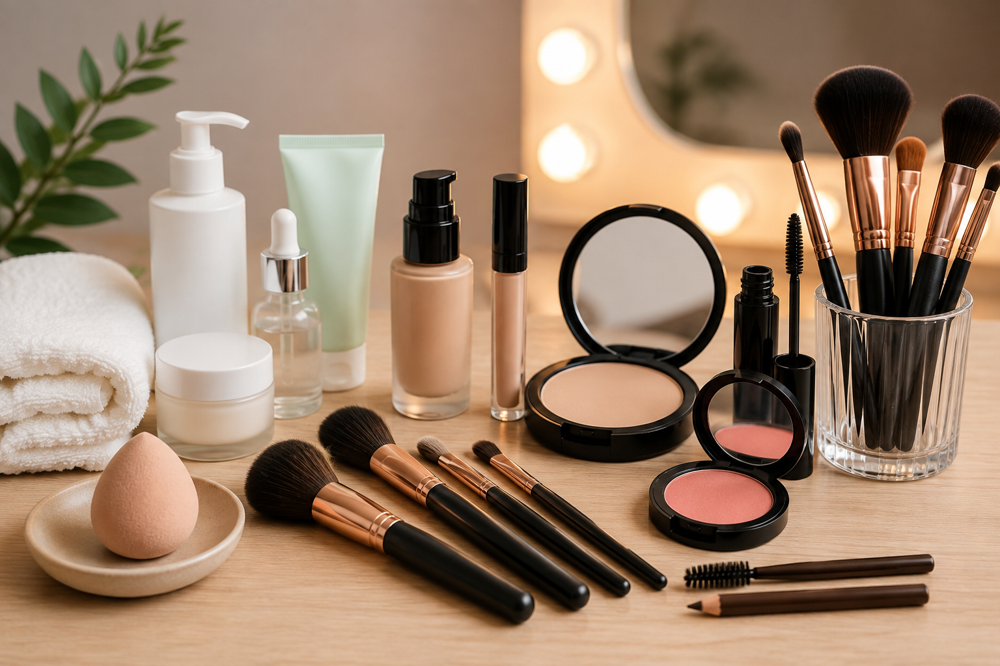

Introdução
Aprender maquiagem do zero não precisa ser confuso. Esta aula de maquiagem para iniciantes organiza o essencial: o que comprar (ou não), como segurar os pincéis, a ordem correta de aplicação e como montar um look simples e bonito.
O objetivo não é copiar um tutorial viral. É entender o porquê de cada etapa, para que você consiga adaptar a técnica ao seu rosto, à sua pele e ao seu dia a dia.
O que você vai aprender
Ao final desta aula, você será capaz de:
- Identificar os produtos básicos de um kit inicial de maquiagem.
- Reconhecer as funções principais dos pincéis mais usados.
- Aplicar a ordem correta de produtos no rosto.
- Executar um look diário simples e equilibrado.
- Evitar os erros mais comuns de quem está começando.
Materiais e produtos
Você não precisa de dezenas de itens. Comece com o essencial e vá expandindo conforme praticar.
Kit básico sugerido
- Hidratante facial (adequado ao seu tipo de pele)
- Primer (opcional no inÃcio)
- Base ou BB cream
- Corretivo
- Pó translúcido ou compacto
- Blush em pó ou creme
- Máscara de cÃlios
- Lápis ou sombra para sobrancelha
- Batom ou gloss
Pincéis úteis no começo
- Pincel de base (ou esponja)
- Pincel de pó
- Pincel de blush
- Pincel pequeno para sobrancelha ou detalhes
Se o orçamento estiver apertado, priorize base, corretivo, pó, blush e máscara. Muitos produtos multifuncionais resolvem bem no inÃcio.
Conceitos essenciais
Ordem de aplicação
A sequência clássica ajuda a evitar manchas e a prolongar a duração:
- Limpeza e hidratação
- Primer (se usar)
- Base
- Corretivo
- Pó
- Contorno e blush (se aplicáveis)
- Olhos e sobrancelhas
- Lábios
- Fixador (opcional)
Menos é mais no começo
Camadas finas e bem espalhadas costumam render melhor do que quantidades grandes de produto. Observe a pele com luz natural sempre que possÃvel.
Passo a passo: sua primeira maquiagem completa
Agora que você já conhece os produtos essenciais e entende a ordem básica de aplicação, é hora de montar sua primeira maquiagem completa. O objetivo desta prática não é criar um resultado pesado ou perfeito na primeira tentativa. A ideia é aprender a controlar quantidade, acabamento e sequência.
Faça cada etapa com calma e observe o efeito antes de adicionar mais produto. Uma das habilidades mais importantes para quem está começando é aprender a construir a maquiagem aos poucos.
1. Limpe e prepare a pele
Comece com o rosto limpo. Se houver resÃduos de maquiagem, excesso de oleosidade ou sujeira, a base pode acumular e perder uniformidade. Depois da limpeza, aplique um hidratante compatÃvel com sua pele e espere alguns minutos antes de continuar.
Se você utiliza protetor solar durante o dia, ele deve entrar antes da maquiagem. O primer é opcional para iniciantes: ele pode ajudar no acabamento, mas uma boa preparação de pele já faz grande diferença.

2. Aplique a base em pequenas quantidades
Coloque uma pequena quantidade de base no centro do rosto e espalhe em direção às laterais. Você pode usar uma esponja úmida, um pincel próprio para base ou os dedos limpos, dependendo da textura do produto.
Não tente cobrir tudo de uma vez. Uma camada fina costuma produzir um resultado mais natural. Se alguma região ainda precisar de cobertura, adicione uma segunda camada somente naquele ponto.
3. Use o corretivo apenas onde necessário
O corretivo pode ser aplicado abaixo dos olhos, em pequenas manchas, marcas ou áreas que você deseja iluminar. Evite colocar uma grande quantidade formando um triângulo pesado sob os olhos, principalmente enquanto ainda está aprendendo.
Dê leves batidinhas para espalhar. Esfregar o produto pode remover a base aplicada anteriormente.
4. Sele com pó estrategicamente
O pó ajuda a controlar brilho e a aumentar a estabilidade dos produtos cremosos. Isso não significa que o rosto inteiro precise receber uma camada pesada.
Comece pela zona T — testa, nariz e queixo — ou pelas regiões que apresentam maior oleosidade. Peles secas normalmente precisam de menos pó.
5. Adicione cor com blush
Pegue pouco blush no pincel e retire o excesso antes de tocar o rosto. Aplique gradualmente nas maçãs do rosto e esfume em direção às têmporas.
O segredo é construir intensidade. É muito mais fácil adicionar produto do que tentar remover um excesso.
6. Preencha as sobrancelhas com leveza
Observe primeiro onde existem falhas. Em vez de desenhar uma sobrancelha completamente nova, faça pequenos traços imitando pelos e respeitando o formato natural.
A região inicial da sobrancelha geralmente fica mais bonita quando permanece suave. Concentre um pouco mais de definição no arco e na parte final.
7. Finalize os olhos
Para a primeira maquiagem, você não precisa dominar um esfumado complexo. Uma sombra neutra suave pode ser aplicada na pálpebra, seguida de máscara de cÃlios.
Ao aplicar máscara, posicione a escova próxima à raiz dos cÃlios e faça movimentos suaves em direção à s pontas. Evite compartilhar máscara, lápis ou produtos que tenham contato direto com a região dos olhos.
8. Escolha um produto para os lábios
Batom, gloss ou hidratante com cor funcionam muito bem para iniciantes. Se estiver aprendendo a aplicar batom mais intenso, comece pelo centro dos lábios e vá definindo as bordas aos poucos.
9. Observe o equilÃbrio do rosto
Antes de adicionar qualquer outro produto, afaste-se do espelho e observe o conjunto. Ver a maquiagem de uma distância maior ajuda a perceber se o blush está muito forte, se a base termina abruptamente no maxilar ou se as sobrancelhas estão diferentes entre si.
10. Faça a revisão final
Veja o resultado também em luz natural sempre que possÃvel. A iluminação do banheiro ou do quarto pode esconder diferenças de cor e excesso de produto.
Use essa revisão como aprendizado, não como julgamento. Identifique uma coisa que funcionou bem e uma coisa que você pretende melhorar na próxima prática.
Se você estiver em dúvida entre colocar mais produto ou esfumar melhor o que já aplicou, primeiro esfume. Muitas vezes, o acabamento melhora sem precisar adicionar nada.
Erros comuns de quem está começando na maquiagem
Errar faz parte do aprendizado. A maior parte dos problemas de acabamento não acontece porque a pessoa “não leva jeitoâ€, mas porque ainda não aprendeu a controlar quantidade, textura e sequência.
Usar base em um tom muito diferente do pescoço
A base deve conversar com o tom do rosto, do pescoço e do colo. Uma base muito clara pode deixar o rosto acinzentado; uma muito escura pode criar uma divisão evidente na mandÃbula. Sempre que possÃvel, teste o produto próximo ao maxilar e observe o resultado em luz natural.
Aplicar produto demais de uma vez
Base, corretivo, pó, blush e contorno funcionam melhor quando construÃdos em camadas finas. Colocar muito produto logo no inÃcio torna mais difÃcil corrigir o excesso e pode deixar a maquiagem marcada ou pesada.
Esquecer de esfumar
Linhas muito marcadas entre base, blush, sombra ou contorno normalmente indicam falta de transição. Depois de aplicar um produto, observe as bordas e esfume até que a passagem entre uma área e outra fique mais suave.
Usar pincéis e esponjas sujos
Ferramentas sujas podem misturar cores antigas, prejudicar o acabamento e acumular resÃduos. Manter pincéis e esponjas limpos faz parte da técnica e também da higiene.
Ignorar o tipo de pele
Uma rotina que funciona para pele oleosa pode não funcionar para uma pele seca. Observe como sua pele reage a hidratantes, bases e pós. A maquiagem costuma ficar melhor quando os produtos acompanham as caracterÃsticas da pele em vez de lutar contra elas.
Conferir o resultado apenas muito perto do espelho
De perto você percebe detalhes; de longe você percebe equilÃbrio. Durante a maquiagem, alterne as duas distâncias para avaliar simetria, intensidade do blush, sobrancelhas e diferença de cor entre rosto e pescoço.
Tentar aprender tudo no mesmo dia
Não é necessário dominar delineado, contorno, sobrancelhas e esfumado complexo ao mesmo tempo. Escolha uma habilidade por prática. Quando o básico fica automático, técnicas mais avançadas se tornam muito mais fáceis.
Se um produto ficou forte demais, tente primeiro esfumar com uma ferramenta limpa. Em produtos em pó, um pincel macio pode suavizar o excesso. Em produtos cremosos, pequenas batidinhas com uma esponja limpa podem ajudar a integrar melhor as camadas.
Dicas profissionais
- Sempre observe o resultado perto de uma janela ou em luz natural.
- Fotografe o look e compare com o espelho — a câmera ajuda a identificar excessos.
- Limpe os pincéis regularmente (sabão neutro ou especÃfico para pincéis).
- Teste produtos novos em uma área pequena da pele se você tiver sensibilidade.
Higiene e segurança na maquiagem
Uma maquiagem bonita também depende de ferramentas limpas e produtos bem conservados. Pincéis, esponjas e aplicadores entram em contato com oleosidade, resÃduos e células da pele, por isso a higiene precisa fazer parte da rotina.
Cuidados com pincéis e esponjas
Lave pincéis usados com produtos cremosos com mais frequência e não guarde ferramentas ainda úmidas dentro de necessaires fechadas. Depois da lavagem, deixe secar completamente em local ventilado.
Evite compartilhar produtos de uso direto
Máscara de cÃlios, lápis de olho e produtos que encostam diretamente nos lábios ou nos olhos não devem ser compartilhados. Essa região é sensÃvel e merece atenção especial.
Observe validade, cheiro e textura
Mesmo antes da data indicada na embalagem, um produto pode apresentar alteração de odor, cor ou consistência. Se algo parecer diferente do normal, o mais seguro é interromper o uso.
Faça testes quando usar algo novo
Se você tem pele sensÃvel ou histórico de irritação com cosméticos, testar uma pequena quantidade antes de aplicar o produto em uma área extensa pode ajudar a identificar uma reação indesejada.
Se surgir ardência intensa, vermelhidão persistente, inchaço ou outro tipo de reação, retire o produto e procure orientação profissional de saúde quando necessário.
ExercÃcio prático: repita o mesmo look duas vezes
Escolha um dia em que você possa praticar sem pressa e refaça o passo a passo completo deste guia. O objetivo não é terminar rápido: é observar como você aplica cada produto e identificar onde ainda existe dificuldade.
Primeira prática
Faça a maquiagem normalmente e, ao terminar, anote três coisas:
- Qual etapa foi mais fácil.
- Qual etapa exigiu mais atenção.
- Qual produto você usaria em menor ou maior quantidade na próxima tentativa.
Observe o resultado em diferentes luzes
Olhe a maquiagem perto de uma janela ou em outro ambiente com iluminação diferente. Observe principalmente a cor da base, a intensidade do blush, a transição no maxilar e o acabamento do corretivo.
Tire uma foto
Uma fotografia pode revelar detalhes que passam despercebidos no espelho. Não precisa publicar a imagem: use-a apenas como registro para comparar sua evolução.
Segunda prática
Em outro dia, repita exatamente o mesmo look tentando corrigir apenas os pontos que você identificou na primeira tentativa. Evite adicionar técnicas novas nesse momento.
Quando você consegue repetir um resultado simples com controle, significa que os fundamentos estão começando a ficar naturais. Depois disso, adicionar delineado, sombras, contorno ou técnicas mais avançadas fica muito mais fácil.
Revisão rápida
- Kit básico é suficiente para começar.
- Ordem de aplicação importa.
- Camadas finas e esfumado são seus aliados.
- Higiene dos pincéis e produtos é parte da técnica.
- Observe luz natural e adapte ao seu rosto.
Perguntas frequentes sobre maquiagem para iniciantes
O que comprar para começar a fazer maquiagem?
Você não precisa montar uma coleção enorme. Para começar, um kit simples pode incluir hidratante, base ou BB cream, corretivo, pó, blush, máscara de cÃlios e um produto para os lábios. Conforme ganhar prática, você pode adicionar sombras, delineador, iluminador, contorno e outros produtos de acordo com o tipo de maquiagem que deseja fazer.
Qual é a ordem correta da maquiagem?
Para uma maquiagem básica, você pode começar preparando a pele com limpeza e hidratação. Depois, aplique base, corretivo, pó apenas onde necessário, blush, sobrancelhas, maquiagem dos olhos e produto para os lábios. Essa sequência não é uma regra absoluta: com experiência, você pode adaptá-la ao acabamento e aos produtos utilizados.
Base ou corretivo: qual passar primeiro?
Para quem está começando, aplicar a base primeiro costuma facilitar o processo porque ela já uniformiza boa parte da pele. Depois, você consegue enxergar melhor onde o corretivo realmente é necessário. Isso também ajuda a evitar uma quantidade maior de produto do que o necessário.
Posso fazer maquiagem sem usar pincéis?
Sim. Alguns produtos lÃquidos e cremosos podem ser aplicados com os dedos limpos ou com uma esponja apropriada. Os pincéis oferecem mais possibilidades de acabamento e precisão, mas você não precisa comprar vários deles antes mesmo de aprender o básico.
Como evitar que a maquiagem fique pesada?
Comece sempre com pequenas quantidades e construa cobertura aos poucos. Espalhe e esfume bem cada camada antes de decidir se precisa adicionar mais produto. Observar o rosto em luz natural também ajuda a perceber excesso de base, corretivo, pó ou blush.
Quanto tempo leva para aprender maquiagem?
Não existe um prazo igual para todas as pessoas. O mais importante é praticar as mesmas técnicas básicas até conseguir repeti-las com segurança. Em vez de tentar aprender várias técnicas avançadas ao mesmo tempo, pratique preparação da pele, base, corretivo, blush, sobrancelhas e olhos separadamente e acompanhe sua evolução.
Não use o resultado de outra pessoa como única referência. Formato do rosto, tipo de pele, produtos e ferramentas mudam o acabamento. Observe principalmente se você consegue repetir a técnica e entender o motivo de cada etapa.
Conclusão
Agora você já conhece a sequência essencial para criar sua primeira maquiagem com mais segurança. Continue explorando os guias da LUME para aprofundar técnicas de preparação de pele, olhos, sobrancelhas, cÃlios e acabamento.